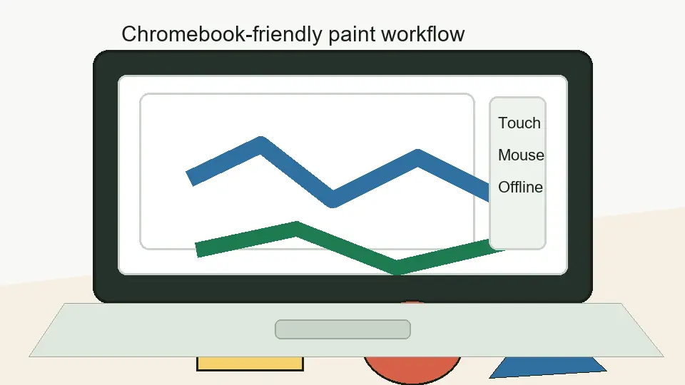

Why Chromebook users search for it
Chromebooks do not always need a massive image editor. Sometimes the right answer is a simple paint-style app that opens quickly, accepts mouse or touch input, and handles basic drawing without making the workflow feel heavy.
Chrome OS fit
It matches lightweight Chromebook tasks
PaintZ is the kind of tool that makes sense for quick school diagrams, doodles, rough markups, and basic image work. On a Chromebook, that is often enough. The value is the low-friction workflow: open the app, draw, edit, and save without treating every small visual task like a design project.
The browser-first nature also makes the app easier to understand for users who are already living inside Chrome tabs and Chrome OS apps. It is not trying to be a full desktop editing environment.
When it works well
Use PaintZ on Chromebook for
- simple classroom sketches
- rough visual explanations
- mouse or touch drawing
- quick screenshots and markups
- basic paint-style image editing
When to avoid it
Use another editor for
- advanced layers and masks
- large professional artwork
- complex photo retouching
- vector illustration workflows
- collaborative design handoff
Touch and mouse
Input style matters
PaintZ makes more sense when your drawing task is simple enough for a mouse, trackpad, touchscreen, or stylus-style input. If you need pressure-sensitive brush behavior and a full illustration workflow, you should judge it against that need honestly instead of expecting it to behave like a studio app.
Offline expectation
Think of offline support as practical, not magic
Offline-friendly behavior is useful on a Chromebook, especially when a connection is unreliable. But the safer workflow is still to test your exact setup, save intentionally, and avoid depending on any browser app for critical work without checking how your files are handled.